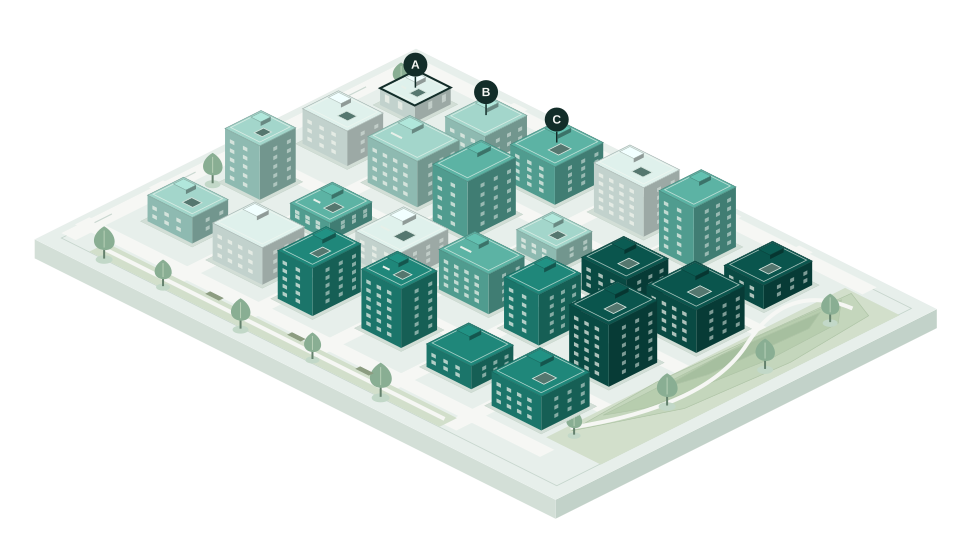

당신의 기준으로.도시를 새롭게.
장소의 조건과 가격을 함께 읽는 지도 플랫폼.
장소 A의 가상 예시
35만 원 / 월보증금 1,000만 · 23㎡
가격표 뒤의
조건까지.
같은 장소 A의 경사, 고도, 연식.
가격표에 없던 조건을 가까이 봅니다.
- 경사
- 1%
- 고도
- 90m
- 준공
- 1995년
기준이 바뀌면,
도시도 달라집니다.
중요한 조건에 더 큰 무게를.
가격은 점수에 넣지 않습니다.
장소 A · 지금의 내 기준
37점조건은 비슷하게.
가격은 나란히.
내 기준 ±5점인 가상 예시 3곳.
같은 조건 옆에 가격을 놓습니다.
장소 A의 월 환산 단가
1.70만 원 / ㎡보증금 연 5% 환산을 가정한 예시입니다.
장소 A · 월세 35만 · 내 기준 37점
청록색이 진할수록 면적당 월 환산 가격이 높습니다.
낮음높음